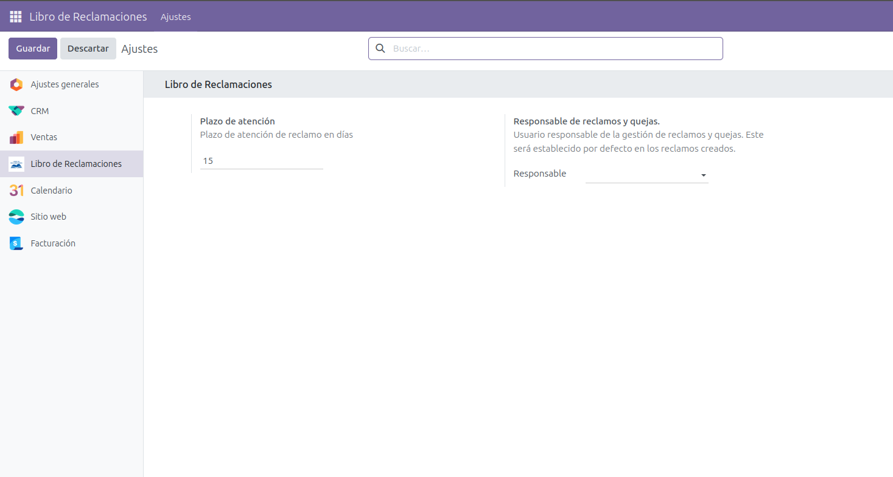
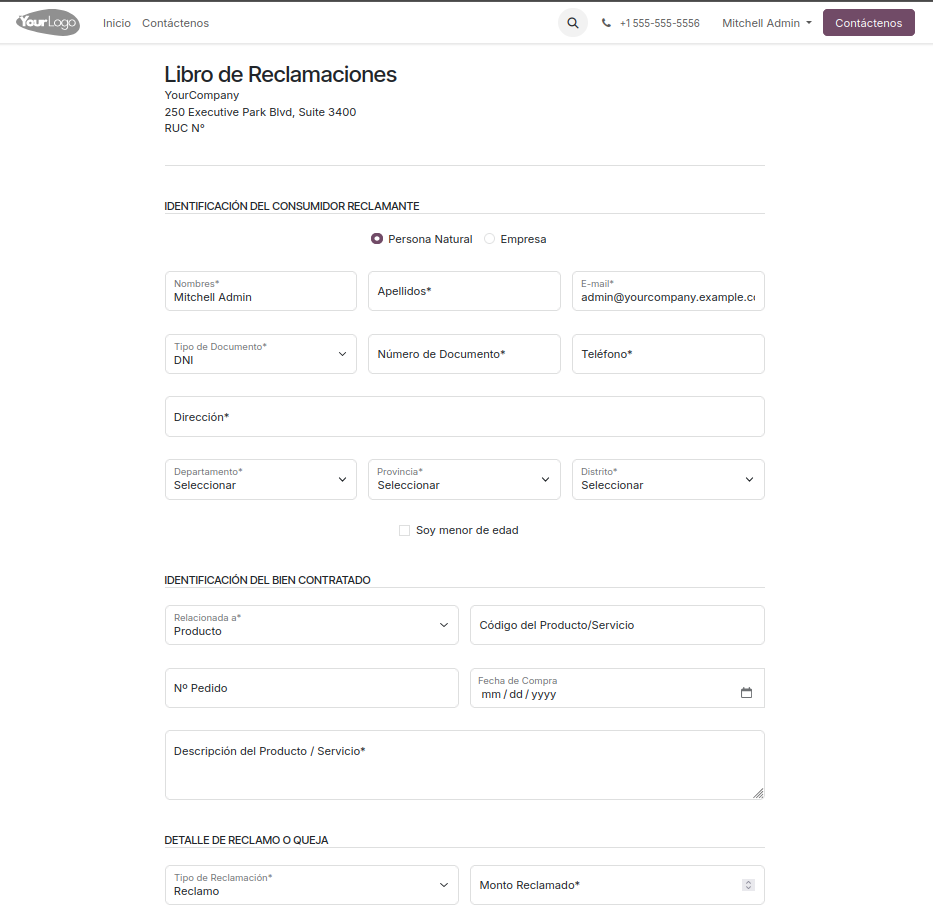
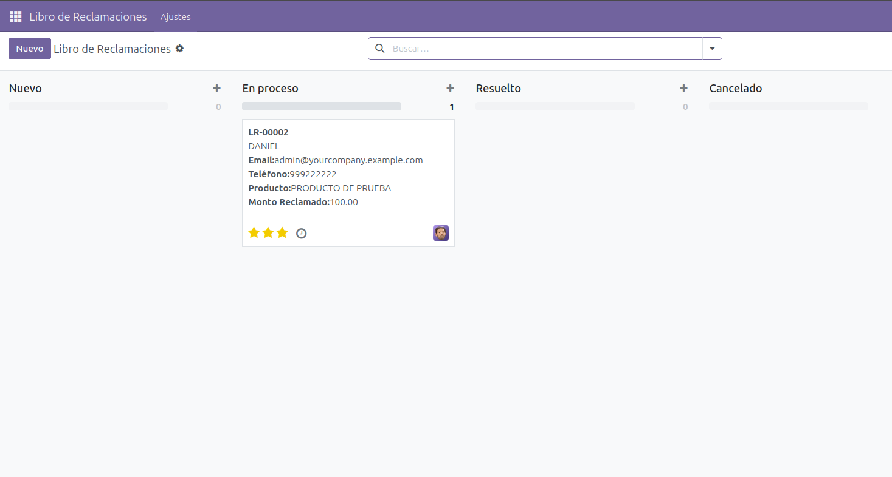
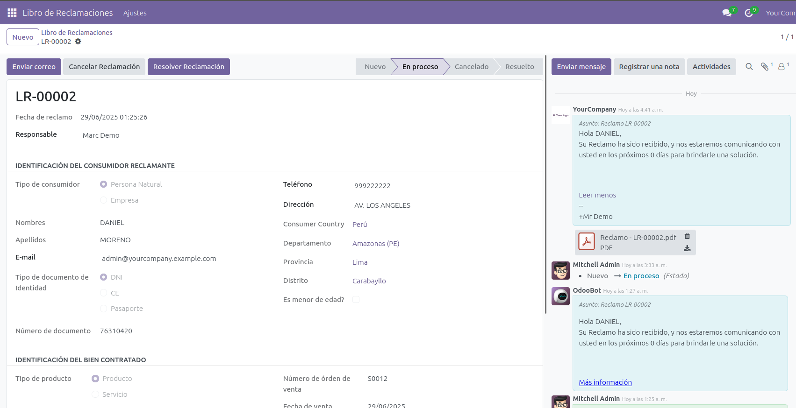
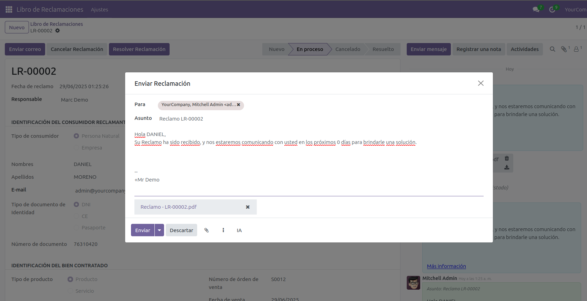

Este módulo permite gestionar el Libro de Reclamaciones oficial de manera digital, totalmente integrado con Odoo. Ayuda a tu empresa a cumplir con la ley peruana, brindando una interfaz amigable tanto para clientes como para el personal del backoffice.
Configura el Libro de Reclamaciones desde el backend de Odoo. Define el plazo de atención y el usuario responsable de quejas y reclamos. Revisa también en la sección de seguridad del usuario que este tenga acceso a "Libro de Reclamaciones".
Los clientes pueden registrar reclamos o quejas en línea de manera sencilla, usando un formulario adaptado a los requisitos legales y compatible con dispositivos móviles.
Vista Kanban para visualizar el estado de atención de los reclamos.
Formulario backoffice para revisar el detalle del reclamo.
Gestiona, haz seguimiento y resuelve todos los reclamos desde el backend de Odoo. Asigna responsables, actualiza estados, comunica a los clientes y genera reportes para cumplir con la normativa peruana (Indecopi/SUNAT).
